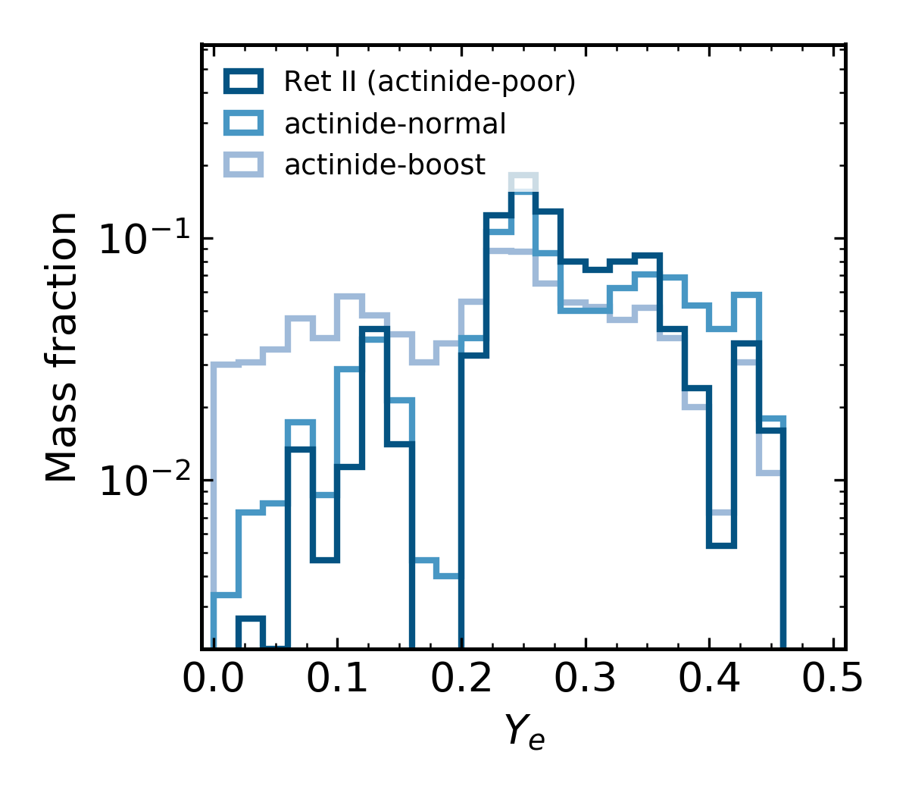

Actinide-Boost Stars Might Not
Suggest a Separate r-Process Site
Erika M. Holmbeck
17 April 2019
Elements in the Universe

from data in Sneden+ (2008)
Neutron capture

Site of the r-process?
Core-collapse supernovae
MHD-jet supernovae
Collapsars
Neutron-star mergers
???
r-process enhanced stars

from data in McWilliam+ (1995), Sneden+ (2003)
Reticulum II

Ji+ (2016)
A. Ji; Dark Energy Survey/Fermilab
Actinide variation among r-process enhanced stars

Holmbeck+ (2019); arXiv:1904.02139
Are stars boosted with actinides
made by a different source?
Can one site produce
the actinide variations?
Empirically characterize r-process events
Monte Carlo method to produce distributions as a function of Ye
Empirical ejecta mass distributions
Holmbeck+ (2019); arXiv:1904.02139
Actinide-boost stars do not call for
a separate r-process progenitor
Is this source an NSM?
NSM lightcurve
Lanthanide-poor blue ejecta + Lanthanide-rich red ejecta

Cowperthwaite+ (2017)
Two ejecta components

Two ejecta components

Results derived from r-enhanced stars
agree* with an NSM observation
Further evidence that an NSM produced
the material in r-enhanced stars like Ret II
Special Thanks
Rebecca Surman (ND), Gail C. McLaughlin (NC State), Anna Frebel (MIT)
Trevor M. Sprouse (ND), Matthew Mumpower (LANL)
Timothy C. Beers (ND), Nicole Vassh (ND), Terese T. Hansen (TAMU), Chris Sneden (UT-Austin)
Vinicius M. Placco (ND), Ian U. Roederer (UMich.), Charli M. Sakari (UW), Rana Ezzeddine (MIT)
Grant Mathews (ND), Ani Aprahamian (ND), Toshihiko Kawano (LANL)